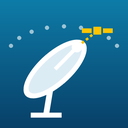

PlainDish privacy policy
This policy covers the PlainDish Android app (“PlainDish”), a tool for aiming a satellite dish. In short: PlainDish does not collect, sell or share any data. It has no account, no ads, no analytics and no tracking. The app does not have permission to use the internet.
Information the app handles
- The location of your dish: from your phone's location (only when you tap “Use my location”), a town you pick from the built-in list, or coordinates you type.
- Your chosen satellite, favourites, satellites you add yourself, saved places and settings (dish type, compass offset, theme).
- Live readings from the phone's motion and magnetic sensors while the compass, calibration or sky screens are open.
- The camera picture, only while the optional camera view is open.
All calculations happen on your phone. Your location, settings and saved places are stored only in the app's private storage and are never sent to the developer or anyone else. Sensor readings and camera frames are used live on screen and are not stored or recorded.
Permissions
- Location (approximate or precise): asked for only when you tap “Use my location”, used once to get your position. Not used in the background. You can refuse and type your place instead.
- Camera: asked for only when you open the camera view, to draw the satellite arc over the live picture. No photos or videos are taken or saved.
Sharing
Your pointing values leave your phone only when you choose to share or copy them, and only to the app or place you pick.
Storage and deletion
Removing a saved place or satellite in the app deletes it. Uninstalling the app removes all its data. Since we never receive your data, there is nothing for us to delete on our side.
What we don't do
- We don't collect personal or sensitive information, including location.
- We don't sell or transfer user data to third parties.
- We don't show ads or use advertising IDs.
- We don't use analytics or crash-reporting services.
Children
The app is not directed at children under 13 and does not knowingly collect information from anyone.
Changes
If this policy changes, the updated version will be posted on this page with a new date.
Contact
Questions or requests: open an issue on GitHub.